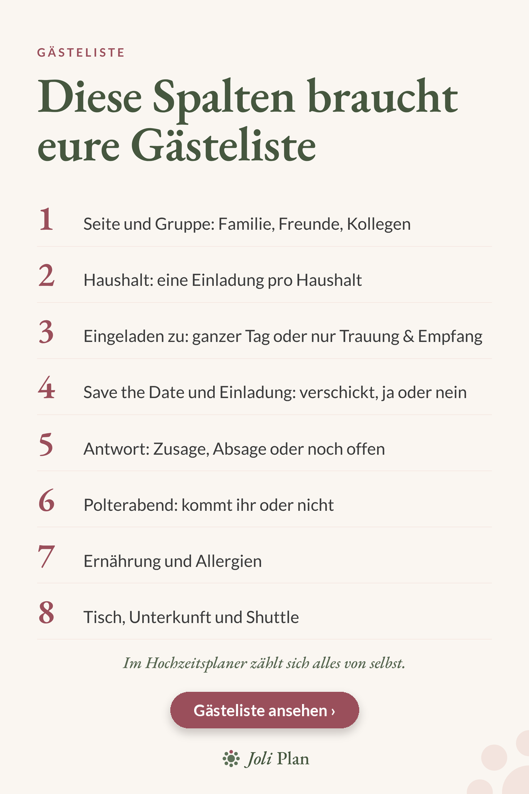

Gäste
Gästeliste Hochzeit: diese Spalten braucht eure Excel-Liste
Eine Gästeliste ist mehr als eine Namensliste. Mit den richtigen Spalten beantwortet sie später fast jede Frage, vom Catering bis zum Sitzplan. Das sind die Spalten, die wir empfehlen.

Die Spalten im Überblick
- Seite und Gruppe: Familie, Freunde, Kollegen.
- Haushalt: eine Einladung pro Haushalt.
- Eingeladen zu: ganzer Tag oder nur Trauung & Empfang.
- Save the Date und Einladung: verschickt, ja oder nein.
- Antwort: Zusage, Absage oder noch offen.
- Polterabend: kommt der Gast oder nicht.
- Ernährung und Allergien.
- Tisch, Unterkunft und Shuttle.
Wofür jede Spalte gut ist
Die Spalte „Haushalt“ verhindert doppelte Einladungen. „Eingeladen zu“ ist wichtig, wenn nicht alle den ganzen Tag dabei sind. Die Spalte „Antwort“ zeigt auf einen Blick, bei wem ihr nachfragen müsst.
Ernährung und Allergien braucht euer Caterer, Tisch und Unterkunft braucht ihr für den Sitzplan und die Organisation vor Ort.
Tipps für eine saubere Liste
- Führt Namen immer gleich: Vorname, dann Nachname.
- Tragt Antworten sofort ein, am besten am selben Tag.
- Zählt die Zusagen regelmäßig, bevor ihr die Zahl an den Caterer meldet.